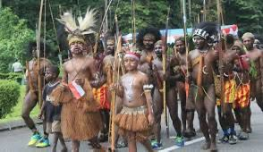
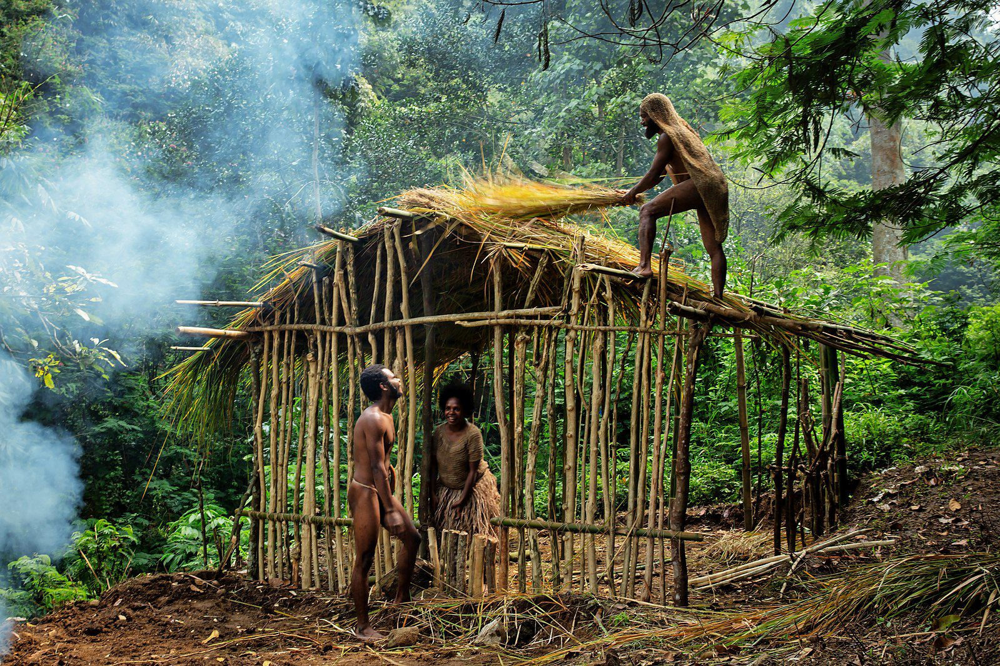
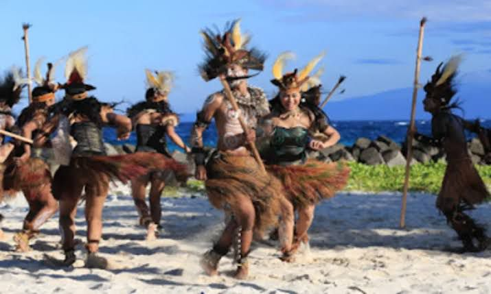
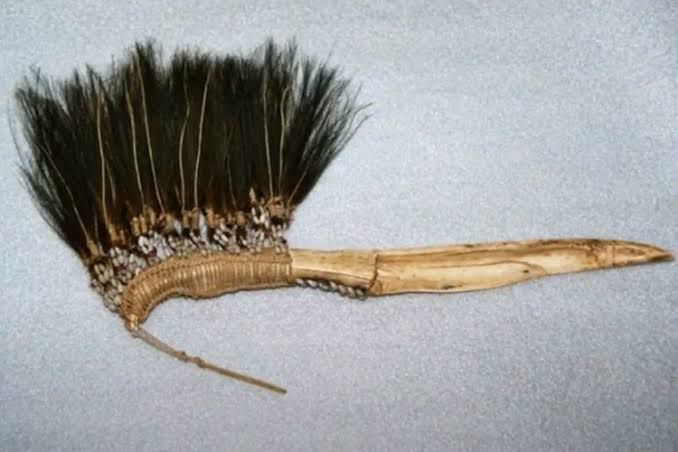

Pakaian Adat
Pakaian adat tradisional Nabire, yang termasuk dalam wilayah adat Papua Tengah, didominasi oleh koteka untuk pria dan rok rumbai untuk wanita. Koteka adalah penutup kemaluan pria yang terbuat dari labu air, sedangkan rok rumbai adalah pakaian wanita yang terbuat dari susunan daun sagu kering
Rumah Adat
Rumah adat Emawa adalah rumah tradisional suku Mee yang mendiami wilayah Papua Tengah, khususnya daerah sekitar Danau Paniai, Deiyai, dan Dogiyai. Rumah ini memiliki bentuk sederhana dengan struktur panggung yang terbuat dari kayu dan atap yang terbuat dari jerami atau daun sagu. Emawa berfungsi sebagai tempat tinggal utama dan juga sebagai simbol budaya serta warisan leluhur
Tarian Tradisional
Tari Balengan, juga dikenal sebagai Tari Pergaulan, adalah tarian tradisional masyarakat pesisir pantai di Nabire, Papua Tengah, khususnya di sekitar Teluk Sarera. Tarian ini juga dikenal dengan nama Ande Saira dan merupakan tari kreasi yang berasal dari tari adat, khususnya tari dansa adat
Senjata Tradisional
Pisau Belati salah satu senjata tradisional yang paling umum dan khas Papua, seringkali memiliki gagang berumbai
Karya seni

Papua Tengah, memiliki berbagai karya seni tradisional yang kaya akan nilai budaya dan sejarah. Beberapa contohnya adalah seni ukir
Karya seni

Alat musik tradisional yang terkenal di Nabire, Papua adalah Triton. Triton adalah alat musik tiup yang terbuat dari kulit kerang. Awalnya, alat musik ini digunakan sebagai alat komunikasi dan pemberi tanda, tetapi sekarang lebih umum sebagai alat hiburan